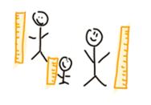
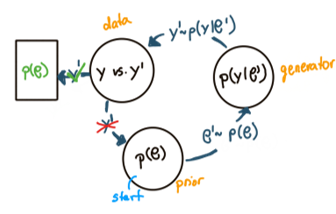

An introductory example#
Background and problem formulation#
{kind=link}
Let’s consider the following example: We plan to conduct a study on the height of people (in cm) in our neighborhood. To model the height data, we use a normal likelihood as the data-generating model, with average height \(\mu\) and random variation \(\sigma\). Furthermore, to keep the example as simple as possible, we ignore any individual differences and other potential factors influencing the height of people. Thus, we use an intercept-only model as data-generating model:
As we have prior knowledge about the expected :math:`height_i` and would like to incorporate this information into our model, we choose a Bayesian modeling approach. This approach allows us to include our prior knowledge by specifying prior distributions for the model parameters:
The challenge is that our prior knowledge pertains to \(height_i\) (i.e., the outcome variable), but we need to specify prior distributions for \(\theta\) (i.e., the model parameters).
\(\mathcal Q\): Which prior distributions for the model parameters accurately reflects our prior knowledge on the outcome variable? \([p(\theta) = ??]\)
Prior elicitation methods#
Prior elicitation methods are designed to translate expert information into corresponding prior distributions for the model parameters. We will focus on a specific group of prior elicitation methods that address specifically the following translation problem: The expert provides information about the outcome variable (here: \(height_i\)) and we need a translation of this information to prior distributions \(p(\theta)\) that correctly reflect this knowledge. To understand this point, it helps to think generatively. Suppose we specify particular prior distributions \(p(\mu)\) and \(p(\sigma)\). To assess whether these priors reflect our knowledge, we can sample values from them: \(\sigma^{S} \sim p(\sigma)\) and \(\mu^{S} \sim p(\mu)\). Next, we plug these sampled values into our likelihood and simulate data: \(height_i^{S} \sim \text{Normal}(\mu^{S}, \sigma^{S})\). Finally, we can ask ourselves: Do these simulated data \(height_i^{S}\) align with our expectations about \(height_i\), then the set of select prior distributions correctly reflects our prior knowledge.
{kind=link}
Parameteric prior elicitation
In this specific variant, the expert provides information about the prior distribution family for each model parameter. The goal becomes then to learn the hyperparameter \(\lambda\) (of this parametric model priors) based on prior knowledge about height.
▶️ Go to the implementation of the parametric-prior variant for our toy example
Deep prior elicitation
In this second variant, we train normalizing flows (NFs) on model simulations to induce a flexible family of prior distributions. NFs are generative models that allow exact density evaluation and entail specialized deep neural networks with trainable parameters \(\lambda\) that can learn highly complex transformations. Thus, in this variant no specification of prior distribution families for the model parameters is necessary, as we learn a joint prior density on the model parameters.
This variant is still under construction. The toy example will come soon.